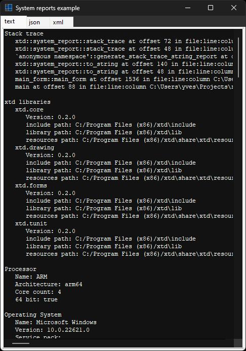

|
xtd
0.2.0
|
Loading...
Searching...
No Matches
system_report.cpp
represents an example of system_report with xtd::forms::text_box control.
- Windows


- macOS

- Gnome


#include <xtd/xtd>
class main_form : public form {
public:
main_form() {
text("System reports example");
start_position(form_start_position::center_screen);
size({500, 700});
report_tab_control.dock(dock_style::fill);
report_tab_control.parent(*this);
report_tab_control.tab_pages().add_range({text_report_tab_page, json_report_tab_page, xml_report_tab_page});
text_report_tab_page.text("text");
json_report_tab_page.text("json");
xml_report_tab_page.text("xml");
text_reports_text_box.dock(dock_style::fill);
text_reports_text_box.font({drawing::font_family::generic_monospace(), text_reports_text_box.font().size()});
text_reports_text_box.multiline(true);
text_reports_text_box.parent(text_report_tab_page);
text_reports_text_box.read_only(true);
text_reports_text_box.text(system_report::to_string());
text_reports_text_box.word_wrap(false);
json_reports_text_box.dock(dock_style::fill);
json_reports_text_box.font({drawing::font_family::generic_monospace(), json_report_tab_page.font().size()});
json_reports_text_box.multiline(true);
json_reports_text_box.parent(json_report_tab_page);
json_reports_text_box.read_only(true);
json_reports_text_box.text(system_report::to_json());
json_reports_text_box.word_wrap(false);
xml_reports_text_box.dock(dock_style::fill);
xml_reports_text_box.font({drawing::font_family::generic_monospace(), xml_reports_text_box.font().size()});
xml_reports_text_box.multiline(true);
xml_reports_text_box.parent(xml_report_tab_page);
xml_reports_text_box.read_only(true);
xml_reports_text_box.text(system_report::to_xml());
xml_reports_text_box.word_wrap(false);
}
private:
tab_control report_tab_control;
tab_page text_report_tab_page;
tab_page json_report_tab_page;
tab_page xml_report_tab_page;
text_box text_reports_text_box;
text_box json_reports_text_box;
text_box xml_reports_text_box;
};
auto main() -> int {
application::run(main_form());
}
Generated on Mon Dec 22 2025 12:09:25 for xtd by Gammasoft. All rights reserved.